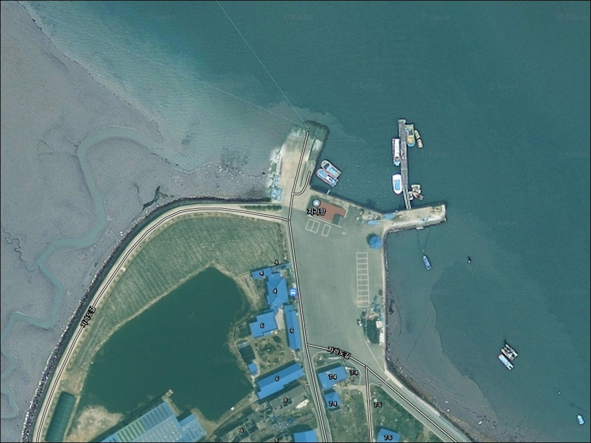
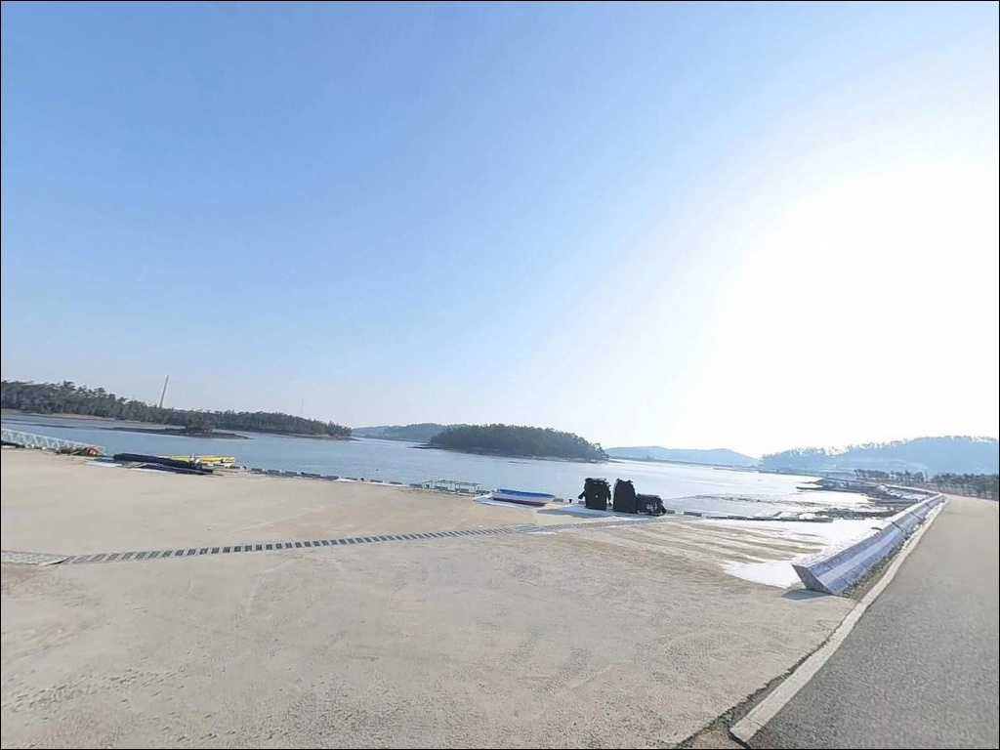
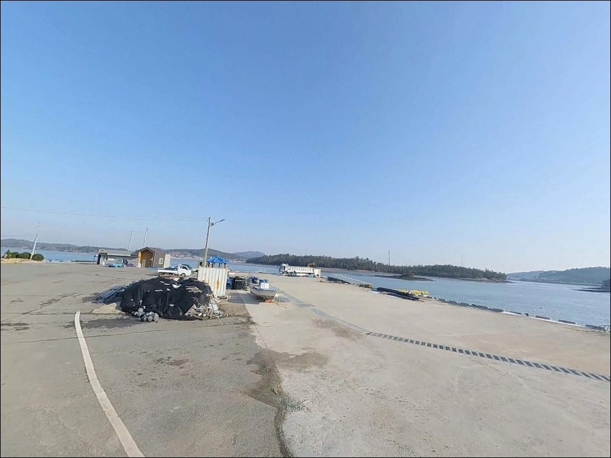
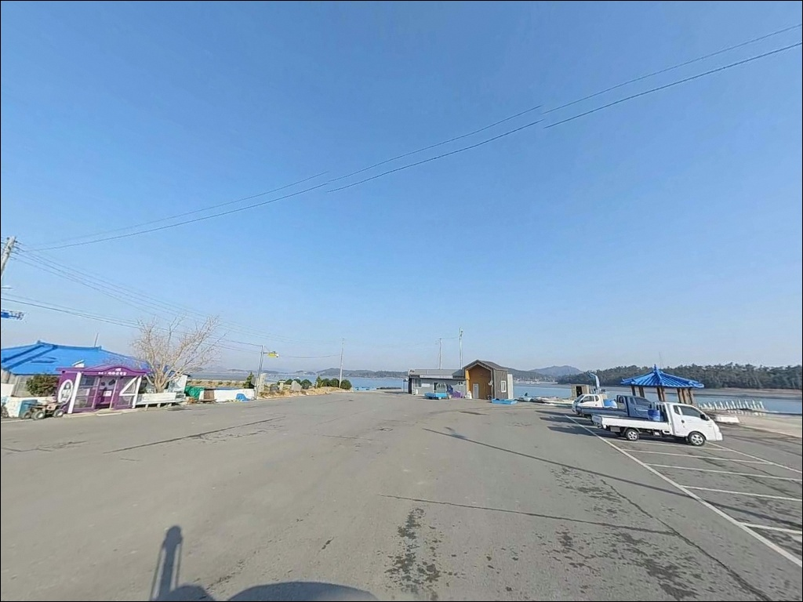
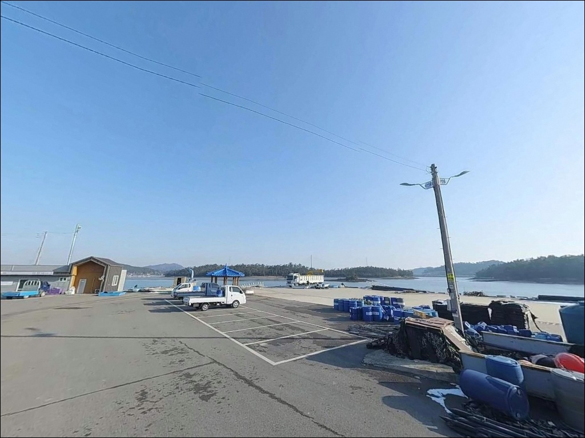
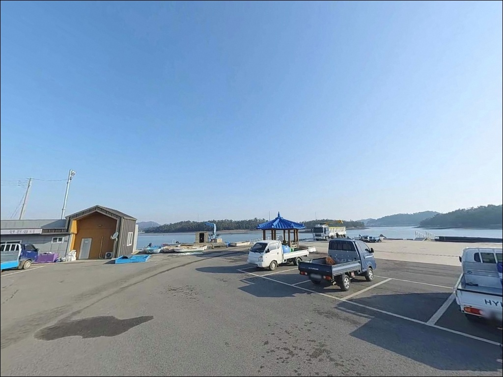
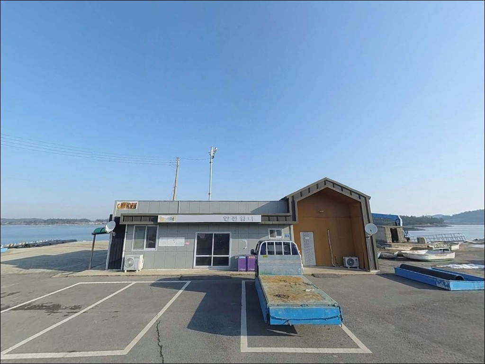
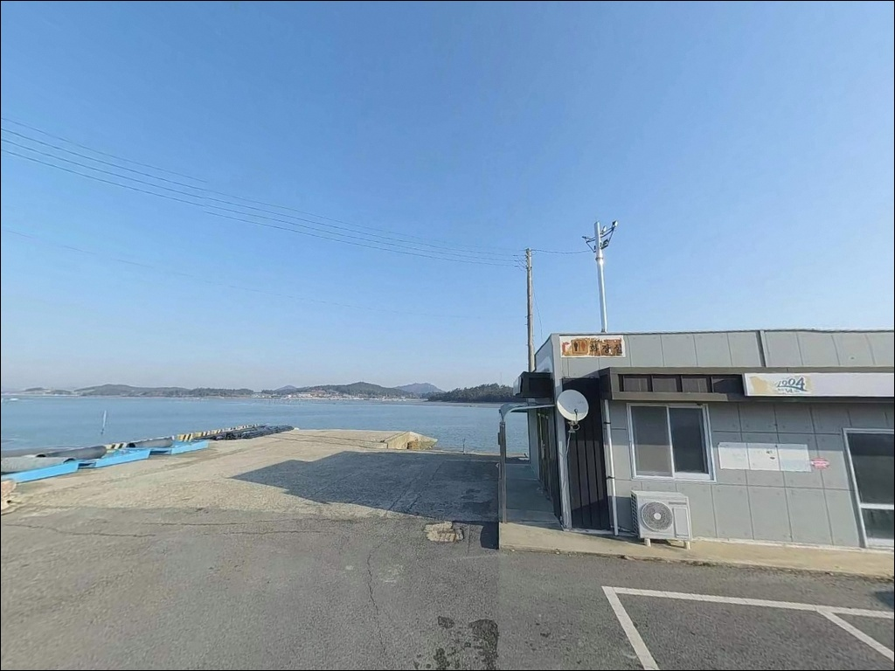
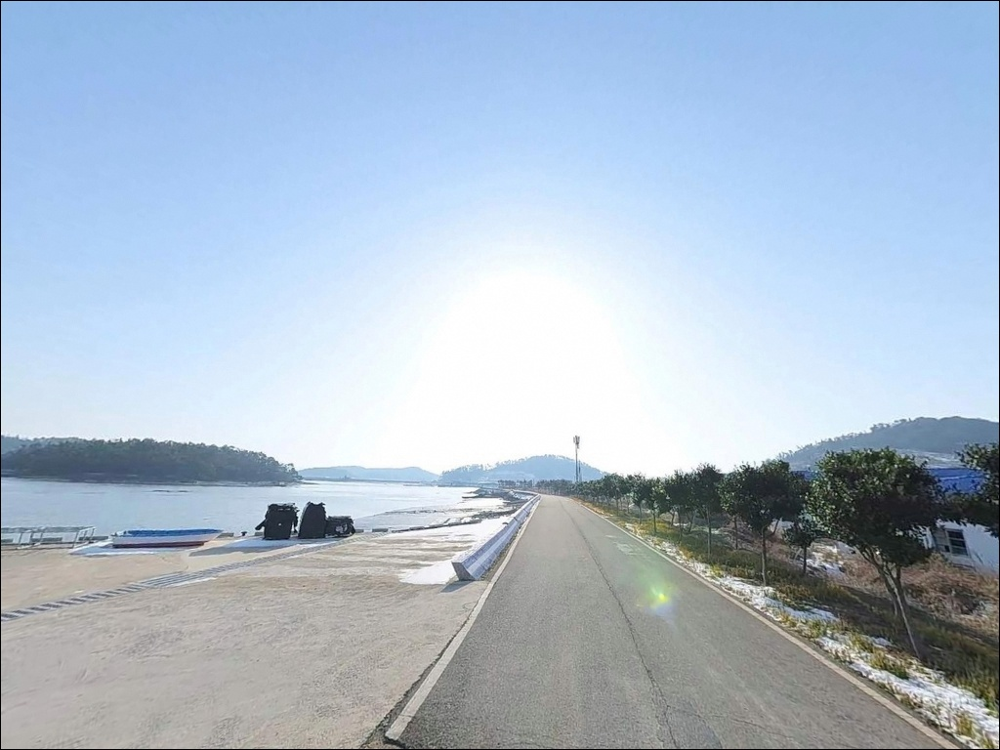

자라항(자라도선착장), 전남 신안군 바다와 가장 가까이 머무는 차박, 낚시 해안 명소
이 페이지에는 광고(제휴 링크 포함)가 있으며, 광고 링크를 통해 구매하면 운영자가 판매 수익 또는 수수료를 받을 수 있습니다. 포인트 사진: 카카오맵 스카이뷰·로드뷰. 이 페이지의 지도·사진 이미지는 카카오맵의 실제 서비스 이미지와 다를 수 있습니다.


포인트 안내
자라항(자라도선착장)
전남 신안군 안좌면 자라리 302-22
물때를 확인하지 않고 자라항에 도착하면
낚시 장비를 꺼내기도 전에 갯벌 앞에서
발을 돌려야 하는 상황을 맞을 수 있습니다.
수심 0~4.2m의 펄 바닥 서해형 선착장으로,
간조 시 주변 갯벌이 드러나는 구조입니다.
만조 전후 타이밍 판단이 낚시 성패를 가르는
핵심 조건입니다.
자라도는 원래 세 개의 작은 섬이
염전 조성으로 하나로 연결된 섬으로,
자라교를 통해 안좌도와 차량으로 연결되어 있습니다.
자라항은 그 자라도 북측에 자리한 선착장으로,
안좌도 복호항을 바라보는 방향에 위치합니다.
낚시 전문 커뮤니티에는 아직 많이 알려지지 않은
조용한 탐방형 포인트입니다.
이 글은 자라항의 물때 판단 기준,
진입 동선, 낚시 방식별 공략 조건에 집중합니다.
조황 단정이나 특정 어종 보장은
이 글의 범위에 포함되지 않습니다.

1. 자라교 경유 진입 동선과 포인트 접근성
자라도는 안좌도 복호항 방면에서
자라교를 건너 진입하는 구조입니다.
교량 개통으로 차량 접근성은 크게 개선되어 있으며,
선착장까지 이어지는 섬 내부 도로는
포장 상태는 유지되나 폭이 좁은 편입니다.
소형~중형 차량 기준으로는 진입에 큰 문제가 없지만,
대형 SUV나 캠퍼밴 수준의 차량이라면
출발 전 위성지도로 도로 폭을 확인하는 편이 좋습니다.
선착장 내부는 소형 어촌 규모에 맞는 공간입니다.
회차는 선착장 입구 쪽에서
소형 차량 기준으로 가능한 구조로 보입니다.
대형 차량의 경우 후진 진출 가능 여부를
미리 판단해두는 편이 안전합니다.
주차는 선착장 진입 전 측면 공터나
내벽 바짝 붙인 자리를 활용하는 방식이 일반적입니다.
어선 입출항 동선과 어구 정리 공간을
막지 않는 자리가 기본 원칙입니다.

2. 차박 환경과 야간 체류 여건
자라도는 소형 섬으로 주변 민가 밀집도가 낮습니다.
야간 차량 통행이 거의 없고
섬 특성상 외부 소음도 적은 편이어서,
차박 프라이버시는 상대적으로 좋은 환경입니다.
조용히 하룻밤 머무는 낚시 차박 목적으로는
나쁘지 않은 조건입니다.
다만 가로등은 드문드문 있을 가능성이 있어
전체적으로 밝은 편이 아닙니다.
개인 조명 장비는 반드시 챙겨야 합니다.
외항 방향은 장산도와의 수도 방향으로 어느 정도 열려 있어,
편서풍 영향 시 바람 노출이 있을 수 있습니다.
기상 예보에서 바람 세기를 미리 확인하고
차량 방향을 잡는 것이 좋습니다.
선착장은 여객선이 기항하는 생업 공간이기도 합니다.
야간 체류 시 어선 작업이나 여객선 일정과
겹치지 않도록 주차 자리를 잡아야 하며,
야간 정숙은 기본 매너입니다.


3. 주변 편의시설 및 인프라 현황
자라도는 소형 섬으로,
선착장 반경 내에서 편의점이나 마트를
기대하기 어렵습니다.
출발 전 식수, 먹거리, 연료, 낚시 소품을
완전히 갖춰서 진입하는 것이
현실적인 준비 방식입니다.
자라교를 건너 안좌도 방면으로 이동하면
안좌면 소재지까지 약 8~9km 거리가 됩니다.
이 방향에 농협 하나로마트와
주유소 등 기본 인프라가 있습니다.
현장에서 필요한 소품이 생겼다면
이 동선으로 이동하는 방법이 가장 현실적입니다.

4. 방문 전 반드시 챙겨야 할 준비사항
자라항 방문에서 가장 먼저 확인할 것은
물때입니다.
수심이 낮은 펄 바닥 구조라
간조 전후에는 낚시 수심 자체가 확보되지 않습니다.
바다타임에서 안좌면·자라도 기준 물때를 확인하고,
초들물에서 중날물 사이, 만조 전후 2~3시간을
공략 타이밍으로 잡는 것이 기본입니다.
서남해 특성상 조류 흐름이 빠른 편입니다.
원투낚시를 할 경우 무거운 봉돌이 필요하며,
바람 영향도 편서풍 방향에서 크게 올 수 있어
기상청 예보와 바다타임 풍속 정보를
출발 당일 아침 다시 한번 확인하는 것이
포인트 낭비를 막는 방법입니다.
펄 바닥 특성상 채비 손실은 적은 편이지만
강한 조류에 대비한 여분 채비는 넉넉히 챙기는 편이 좋습니다.
선착장 석축 끝단은 야간에 미끄러울 수 있으므로
구명조끼와 미끄럼 방지 신발은 필수입니다.

5. 간조에 도착하면 낚시가 안 되는 이유
자라항의 낚시 여건을 결정하는 핵심 요소는
수심과 조류의 조합입니다.
바다타임 데이터베이스 기준 이 포인트의
수심은 0~4.2m, 저질은 펄 바닥입니다.
서해 갯벌 특성상 간조 시 주변이 상당 부분 드러나며,
낚시 가능 수심은 만조 전후에만 확보됩니다.
같은 장소에서도 물때에 따라
낚시가 가능한 자리와 불가능한 자리가
완전히 달라지는 구조입니다.
선착장 주변은 자라도와 안좌도 사이 수도(水道)와
장산도 방향 외해가 만나는 구간에 자리합니다.
안좌도·팔금도 일대 해역은
조류 흐름이 4kn 이상을 기록하는 구간이 있어
채비 컨트롤에 주의가 필요합니다.
선착장 끝단에서 외항 방향이 주 포인트 구간으로,
내항보다는 외항 쪽 물골을 노리는 방식이 유리합니다.
이 일대 인근 해역을 기준으로 기대해볼 수 있는 어종은
감성돔, 농어, 숭어 계열입니다.
자라항 자체의 어종 특화 데이터는
현재 확인된 자료가 없으므로,
출조 전에 "자라도 낚시 조황"과
"안좌도 방파제 낚시 조황"으로 검색해보시기 바랍니다.


6. 지형 조건에 맞는 낚시 스타일 제안
이 포인트에서 지형 조건에 가장 잘 맞는 방식은
찌낚시입니다.
만조 전후 수심이 확보된 타이밍에
선착장 외항 쪽 경계를 따라 크릴이나
청갯지렁이 미끼로 감성돔·숭어를 노리는 방식이
펄 바닥 서해 선착장 구조에 적합합니다.
원투낚시도 이 포인트 조건에 어울립니다.
조류가 빠른 편이므로
봉돌 무게는 조류 세기에 맞게 충분히 올려야 하며,
선착장 끝단에서 외항 방향으로 멀리 보내는 방식이 기본입니다.
만조 타이밍에 집중해 바닥을 탐색하는 원투 전략이
이 지형 구조에서 가장 안정적인 선택입니다.
루어낚시도 시도해볼 만합니다.
안좌도·팔금도 일대 해역에서
농어 루어낚시가 기록된 권역입니다.
시즌은 대체로 봄~가을로 보이며,
선착장 주변 물골이 살아 있는 타이밍에
미노우 플러그나 지그헤드 웜으로
물골 경계 구간을 느리게 끌어오는 방식이 유효합니다.
가을 시즌에는 에깅도 노려볼 수 있습니다.
인근 신안군 안좌도 권역에서
갑오징어 에깅이 가능한 조건이 형성되는 해역입니다.
수심이 확보되는 만조 타이밍에
외항 방향으로 에기를 투척해 탐색하는 방식이
이 지형에 맞는 접근입니다.

7. 여건이 맞지 않을 때 이동할 대안 포인트
자라항 물때가 여의치 않거나
주차 공간이 확보되지 않을 때
가장 가까운 대안은
복호 선착장(안좌도)입니다.
자라교를 건너 안좌도 방면 867m 거리에 위치하며,
수심과 저질 조건이 자라항과 유사한 동일 권역 포인트입니다.
같은 물때 기준이 적용되므로
이동 전 물때 타이밍을 다시 확인하는 것이 먼저입니다.
조금 더 이동할 여유가 있다면
장산도 방면 왁사 선착장 동측 갯바위(약 3.5km)를
대안으로 볼 수 있습니다.
갯바위 포인트로 성격이 다른 낚시가 가능한 구간입니다.
안좌도 원산리 방파제(약 9.9km)는
방파제 형태로 발판이 안정적인 편이어서
생활낚시나 원투 중심 출조라면
선택지로 고려해볼 만합니다.
차박 여건이 자라도에서 맞지 않을 경우,
자라교를 건너 안좌도 본섬 쪽 해안도로변이나
복호항 주변이 대안이 됩니다.
접안 공간과 도로 폭이 상대적으로 여유 있어
대형 차량 체류에 더 적합한 편입니다.

물때를 알고 가면
자라항은 조용하고 충분한 포인트입니다
펄 바닥 서해 선착장에서는
만조 타이밍 판단이 낚시 성패를 가르는 핵심 조건입니다.
자라항이 딱 그런 구조의 포인트입니다.
물때만 맞춰 간다면
찌낚시, 원투, 루어를 복수로 운용하기에
무리 없는 선착장 조건이 갖춰져 있습니다.
낚시 커뮤니티에 조황 기록이 많지 않아
가기 전 정보를 구하기 어려운 편입니다.
그 점이 오히려 주말에도 한적한 이유이기도 합니다.
직접 발품을 팔아 답사해두기 좋은 조용한 포인트로
안좌도 권역을 돌아보는 일정에 자연스럽게 넣을 수 있습니다.
자라교로 육지와 연결된 자라도는
차량 접근이 가능하지만
섬 내부 도로 폭이 좁아 소형 차량 기준의
사전 확인이 필요합니다.
완전 자급 준비와 물때 계획을 갖춰 간다면
낚시 뒤 조용히 하룻밤 머무는 차박 여행으로도
좋은 선택이 될 수 있는 곳입니다.